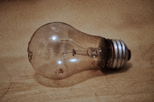

tools
This lightbulb has been blown for at least four years. I don't actually remember how long it's been since I had a light in the oven, but I know it was pre-Pandemic. I replaced it today, and now I don't have to open the oven door to see if the bread is browning, or if some veggies are picking up some color as they roast. A small annoyance is now a lesson, if I remember it that way.